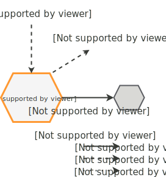

<div class="row row-full row-offcanvas row-offcanvas-left">
  <div id="page-content-wrapper">
    <div class="container-fluid">
      <div class="row row-full content">
        
          
          
          

        
        <div class="page">
  <h1 class="page-title" id="page-title">Overview</h1>
  
<ul id="markdown-toc">
  <li><a href="#interfaces" id="markdown-toc-interfaces">Interfaces</a>    <ul>
      <li><a href="#endpoint-connectivity-events" id="markdown-toc-endpoint-connectivity-events">Endpoint connectivity events</a></li>
      <li><a href="#ep-metadata-management" id="markdown-toc-ep-metadata-management">EP metadata management</a></li>
      <li><a href="#time-series-transmission" id="markdown-toc-time-series-transmission">Time series transmission</a></li>
    </ul>
  </li>
</ul>

<p>Endpoint Lifecycle service (EPL) is a Kaa platform component that monitors endpoint connectivity status and can update a configurable endpoint metadata field with a current connectivity status.</p>

<h1 id="interfaces">Interfaces</h1>

<p>EPL supports a number of interfaces to perform its functional role.
The key supported interfaces are summarized in the following diagram.</p>

<p></p>

<p>For inter-service communication, Kaa services mainly use REST APIs and messaging protocols that run over <a href="https://nats.io/">NATS</a> messaging system.</p>

<h2 id="endpoint-connectivity-events">Endpoint connectivity events</h2>

<p>To know when endpoint goes online or offline, EPL listens to endpoint connectivity events defined in <a href="https://github.com/kaaproject/kaa-rfcs/0009/README.md">9/ELCE</a>.</p>

<h2 id="ep-metadata-management">EP metadata management</h2>

<p>EPL can be optionally configured to update current EP connectivity state as EP metadata field in <a href="https://docs.kaaiot.io/EPR/">Endpoint Register (EPR)</a> or other compatible EP register service using the REST API of that service.</p>

<h2 id="time-series-transmission">Time series transmission</h2>

<p>EPL can be configured to produce time series data points on endpoint connect and disconnect. 
To do so, EPL supports <a href="https://github.com/kaaproject/kaa-rfcs/blob/master/0014/README.md">14/TSTP</a> and acts as a time series transmitter to subscribers.
The time series will contain a JSON record with the “value” field set to 1 for online status, 0 - for offline.
See <a href="/kaa/docs/current/Configuration/#kaa-applications">the configuration page</a> for information on how to configure this interface. 
If you don’t need this functionality, just do not configure this section.</p>

</div>

      </div>
    </div>
  </div>
</div>
